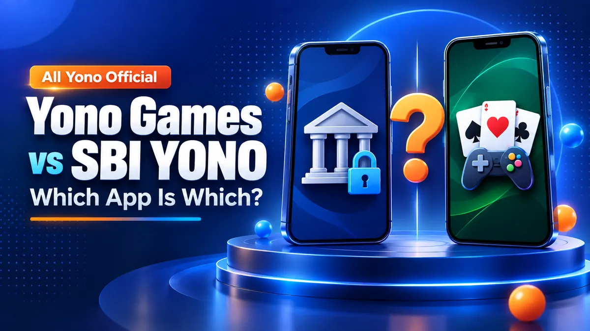

Yono Games vs SBI YONO: Which "Yono" App Is Which?

Short answer: "YONO" is the State Bank of India's banking app. The many "Yono" game apps are unrelated products from other publishers that reuse the name. If you are looking for banking, you want SBI's own app; nothing on this site is connected to SBI.
18+ only. All Yono Official is an independent directory and is not the official website of any app. Online money games are prohibited in India under the Online Gaming Act, 2025. Read our legal guide and Responsible Gaming page.
The SBI Apps
On 28 September 2026, a Google Play search for "yono arcade" in India returned three apps published by the State Bank of India:
| App | Publisher | Package |
|---|---|---|
| YONO SBI: Banking, UPI & Pay | State Bank of India | com.sbi.lotusintouch |
| Yono Lite SBI - Mobile Banking | State Bank of India | com.sbi.SBIFreedomPlus |
| Yono Business | State Bank of India | com.sbi.SBAnywhereCorporate |
These are banking apps. They have nothing to do with rummy, slots or spin games.
Game Apps That Use the Name
The same search also showed game apps from unrelated publishers that use "Yono" in their names:
| App name on Google Play | Publisher | Package |
|---|---|---|
| Yono Arcade Spin | Gameraftosa | com.yaflo2p.faymwe |
| Yono Games | Yobins enterprises | io.yobintech.yonogames |
| Yono Rummy | Yobins enterprises | com.yonorummy.fancard |
| Yono Game | Ahmed Nouri | com.game.RoadCrownDash |
Most Yono-network apps listed on this site are not on Google Play at all. They are distributed as APK files from their own websites.
"Which Yono App Is Best?"
That question usually comes from SBI customers choosing between YONO SBI and Yono Lite. For banking, compare those two on SBI's own website. For Yono-named games, there is no "best" app: this site does not rank them, and it does not publish ratings.
How to Check Which App You Have
- Look at the publisher. SBI's apps are published by "State Bank of India". A game app will name another publisher, or none if it is an APK from a website.
- Check the package name. On Android, Settings → Apps → the app → App details shows it. Compare it with the tables above.
- Never enter bank passwords or UPI PINs into a game app. A game that asks for SBI or YONO login details is a scam.
If you have lost money to a fake app, call the National Cyber Crime Helpline on 1930 or report it at cybercrime.gov.in.
FAQs
Is Yono Games related to SBI YONO?
No. YONO is the State Bank of India's banking app. Yono-named game apps come from unrelated publishers, and All Yono Official has no connection to SBI.
Which Yono app is best?
For banking, compare SBI's own YONO SBI and Yono Lite apps on SBI's website. For Yono-named games, All Yono Official does not rank apps or publish ratings.
Can a Yono game app ask for my SBI login?
No genuine game app needs your bank login, UPI PIN or OTP. Treat any such request as a scam and report it to the Cyber Crime Helpline on 1930.
AllYonoOfficial.com does not run or own the apps listed here. The rummy app can be addictive and risky financially, so use them carefully. Only for 18+ people.
Please read our Disclaimer page and the specific disclaimer for each app.
Alert: Online money games, including rummy played for money, are prohibited in India under the Online Gaming Act, 2025. Some download links on this site are referral links.